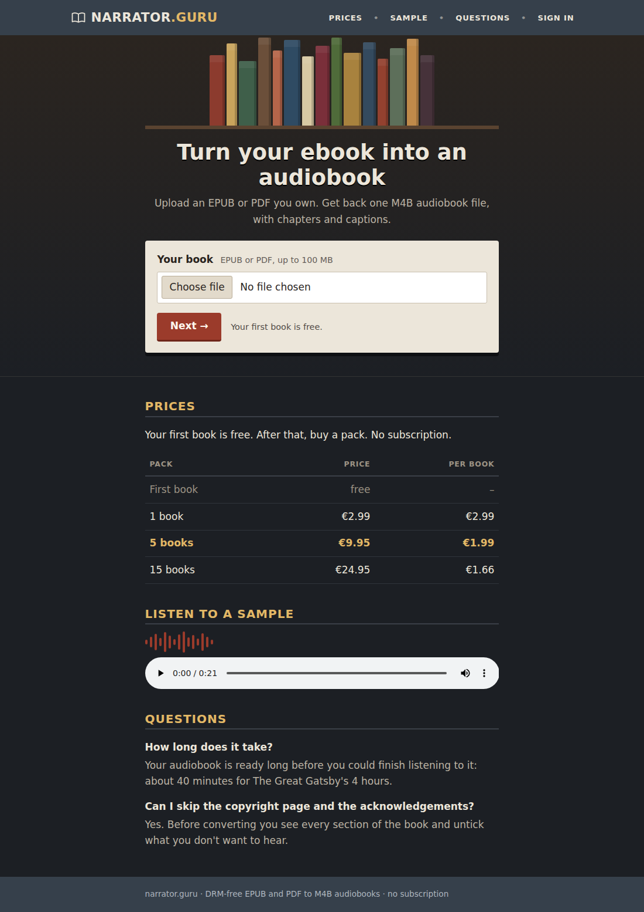
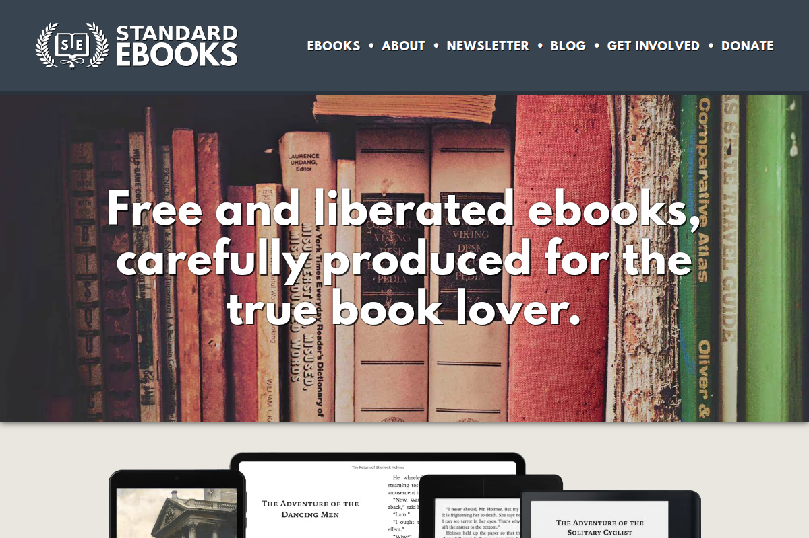
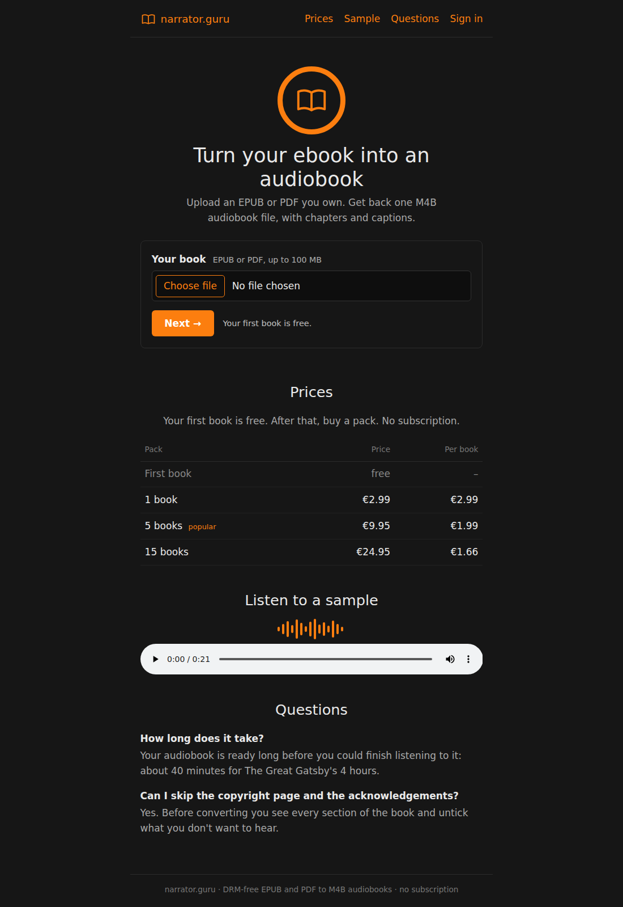
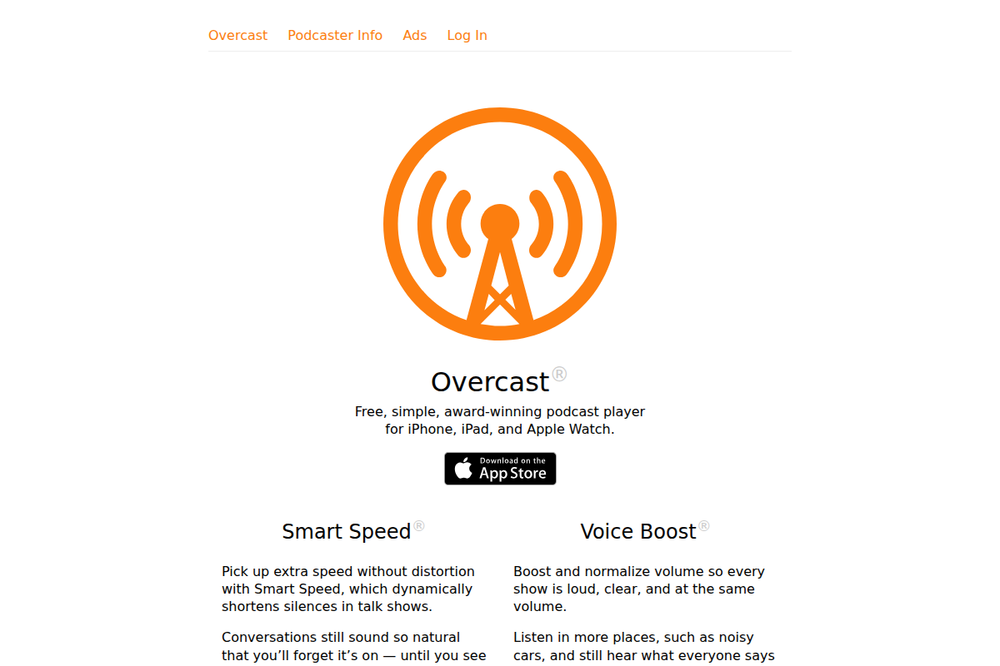
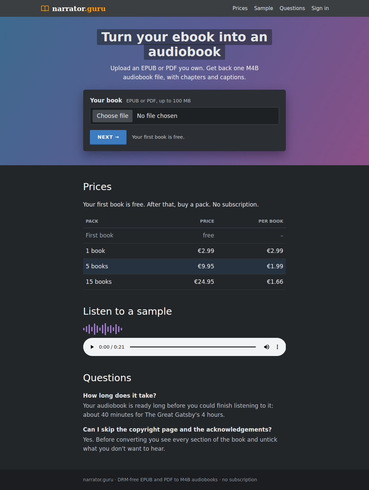
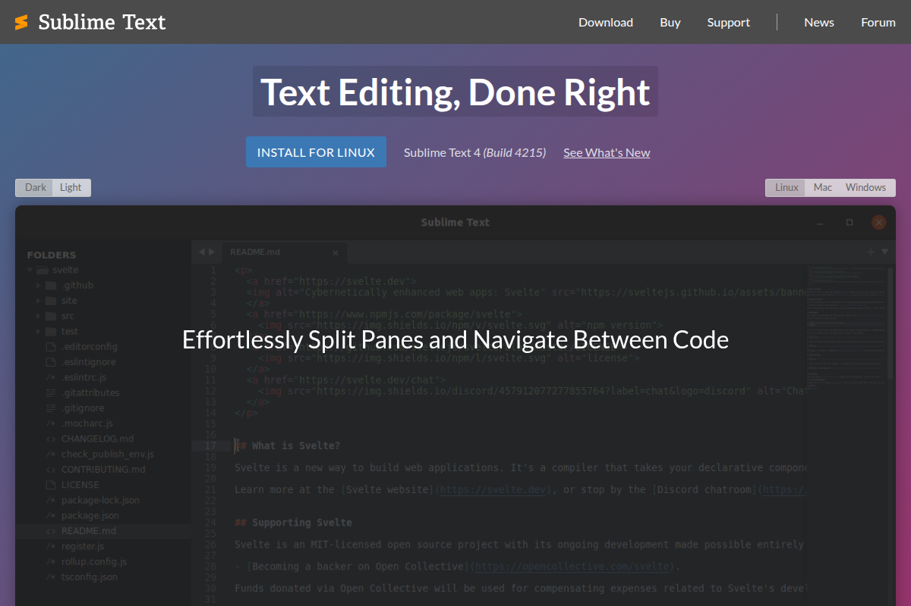
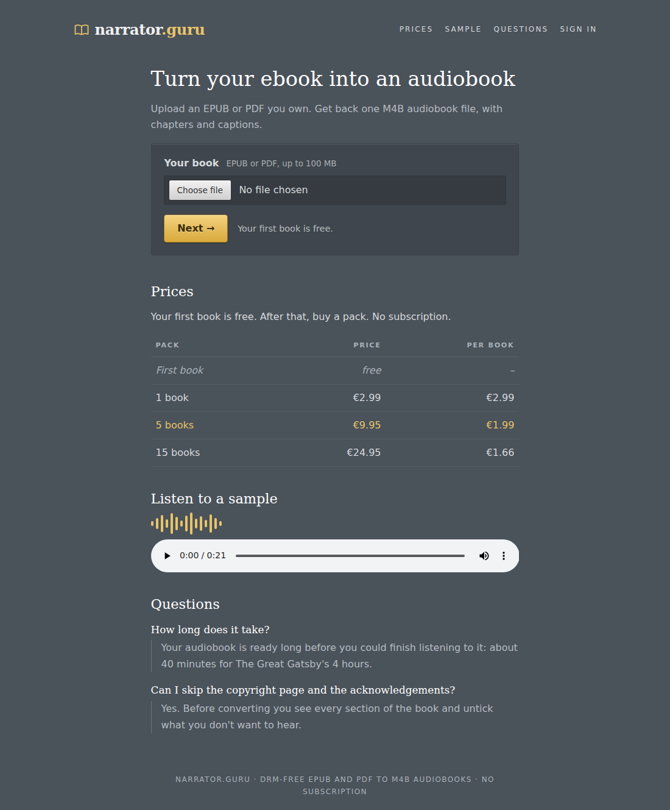
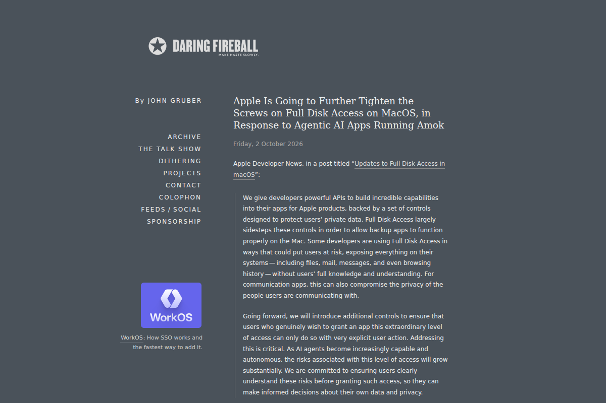

Left: our landing page in that style (click to open the live mockup). Right: the real site it's based on.
Slate header bar, a shelf of coloured book spines drawn in code, cream upload card, brick-red button, gold small-caps headings.


Near-black, everything centred, one orange for the logo, links and the button. The calmest of the four.


Grey top bar, blue-to-purple gradient band, headline on a dark highlight, blue uppercase button. Very 2013.


Blue-grey slate, Georgia serif headings, letter-spaced caps menu, glossy gold button with a slight bevel. Late-2000s hand-made blog.

